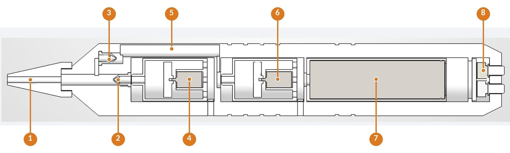
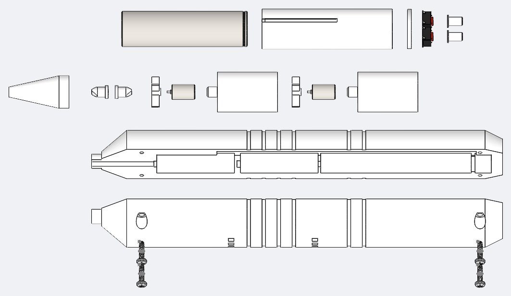
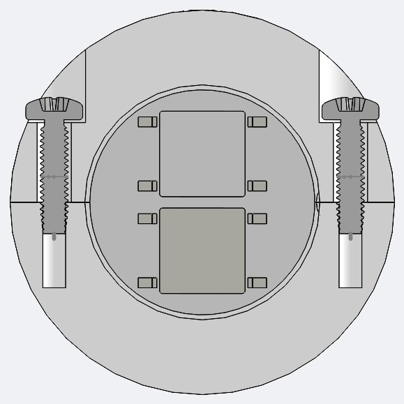
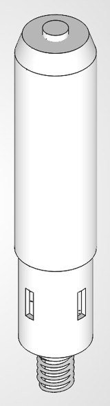
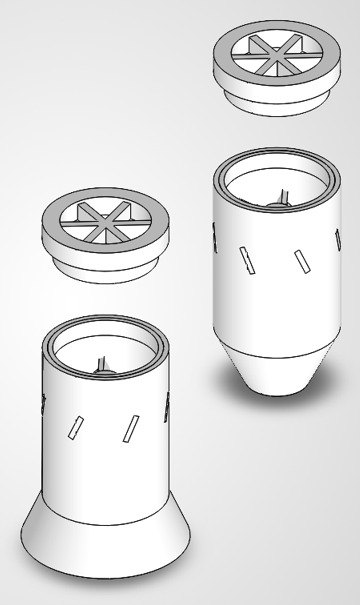

Project 1
Handheld Micro Pump Aspirator
Dept. of BioMolecular Sciences · Dr. Gregg Roman
Outcome
A pen-sized device with two small pumps: button 1 sucks a fruit fly in, button 2 blows it back out, so researchers no longer move flies by mouth aspiration. I designed it, built a prototype that was tested on live flies, then redesigned it around real purchased parts, with a two-piece casing held together by four screws.
Skills
- SolidWorks parts and assembly
- Fitting vendor parts: motors, duckbill valves, Li-ion cell, switches, M2 screws
- Airflow path and check-valve layout
- Interference checking in SolidWorks
Details
| Size | Ø27 × 185 mm, one-handed pen grip |
| Prototype | 7 bodies, tested on live flies |
| Redesign | 22 parts built around real components |
| Casing | ABS, split into two halves joined by four M2 × 8 thread-forming screws (McMaster 94209A344) in counterbored holes; 5 mm wall, 1.6 mm pilot holes |




How it evolved

